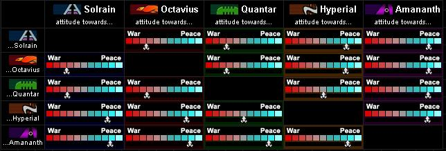

Political StatusGreetings, pilots. My name is Nivs Solamis, political advisor to Sarath V. Welcome to this year's political overview conference. The first item on our agenda is to review the new Political Status system, and then we'll get into the current political atmospheres on a per faction basis... |
| Political Status - What it means for You |
|
The TRI political status system is a useful tool that can be used to determine each faction's current view of you as a pilot. This system takes into account several different statistics including the number of missions that you have successfully completed, and how many rips you have accumulated per faction. Political status affects your individual tax ratings on a per faction basis. If your rating with a particular faction is extraordinarily good you will receive a considerable tax break. However, if your political status against a faction is too low that faction will no longer sell you equipment or refuel and repair your ship. |
| Political Status Levels | ||||||||||||||
|
If you take a look at your statistics you will notice that you have been assigned one of the following levels for each faction. This list shows each political status level in order from best to worst.
|
| Political Atmospheres |
|
This readout displays the present political relationships among the major factions. It's usually sensible to check this information before strapping into your cockpit. If a particular faction is hostile to yours, it's probably a good idea to steer clear of them in flight, especially if you are registered Civilian. |
|  |
In this example you will notice that the three TRI factions are in turmoil, with poor standings relative to one another. Hostile states exist among all three, indicating reduced enforcement protocols and a state of open conflict. Amananth, on the other hand, has quite good relations with all other factions, while Hyperial is friendly with all others except Quantar, though they do not appear to be presently shooting at each other, doubtless because the Quantar have issues on their minds other than their traditional feud. The political relationships among the factions take active account of activity occuring in space, including pilot kills, conflux kills, missions completed or failed - especially aggressive military missions, tuned beacons, and damage to buildings. Special events and news can also have an effect on the relationships, so being aware of current affairs can make the difference between a routine trade run and sailing into the middle of a war zone. |